Fotografie dei nostri lavori
Ponteggi in cantiere: la galleria dei lavori
Quattordici fotografie originali di Ponteggi Srls, fra facciate, condomini e restauri. Ingrandisci le fotografie o apri la scheda di ogni cantiere per approfondire il lavoro e richiedere un preventivo.
Portfolio
I nostri cantieri, foto per foto
Le fotografie documentano lavori già presenti nel portfolio. Ogni nuovo intervento richiede una valutazione specifica.

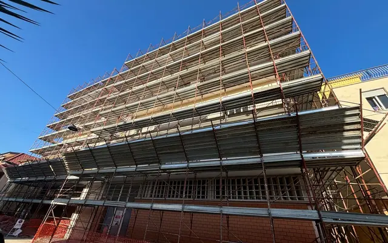
Ponteggio a Roma
Ponteggio disposto lungo la facciata di un edificio a Roma, con impalcati su più livelli e delimitazione dell’area di cantiere.
Scheda cantiere
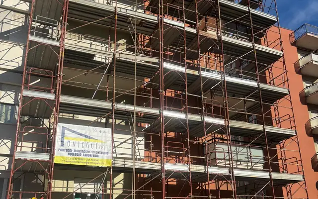
Condominio a San Biagio
Vista del ponteggio sul condominio di San Biagio: struttura sviluppata in altezza davanti alla facciata dell’edificio.
Scheda cantiere
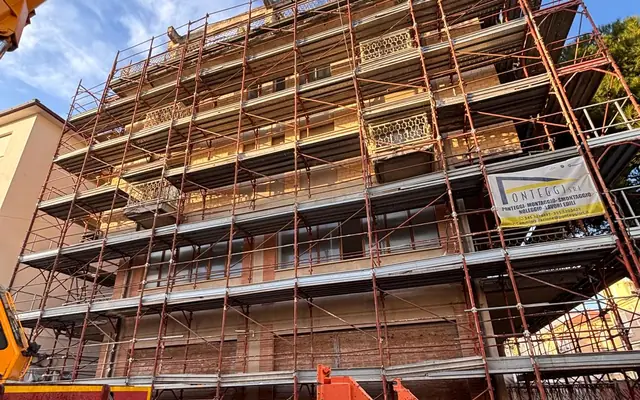
Ponteggio a Catania
Allestimento di un ponteggio sulla facciata di un edificio a Catania, con una gru presente nell’area di lavoro.
Scheda cantiere
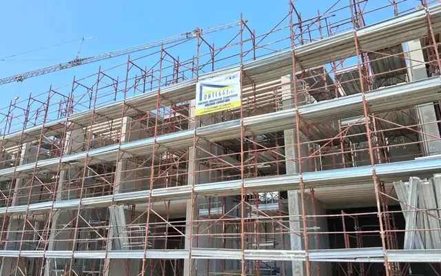
Complesso edilizio a Offagna
Ponteggio montato lungo il prospetto di un complesso edilizio a Offagna, con piani di lavoro distribuiti sulla facciata.
Scheda cantiere
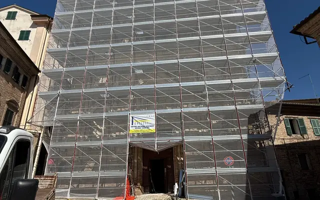
Restauro di una chiesa a Osimo
Facciata di una chiesa a Osimo rivestita da ponteggio e teli protettivi, nel cantiere di restauro documentato nella fotografia.
Scheda cantiere
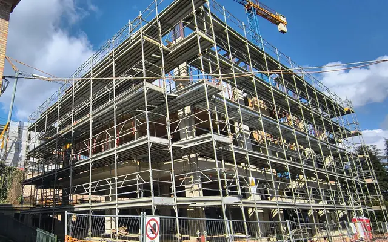
Ponteggio a Offagna
Vista d’angolo di un ponteggio a Offagna, esteso su due lati dell’edificio e affiancato dalla delimitazione del cantiere.
Scheda cantiere
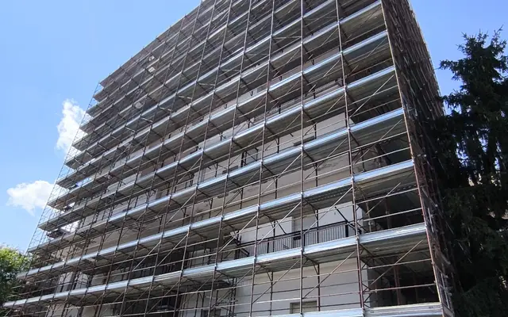
Edificio multipiano
Ponteggio sviluppato lungo la facciata di un edificio multipiano, con una successione di impalcati e protezioni esterne.
Scheda cantiere
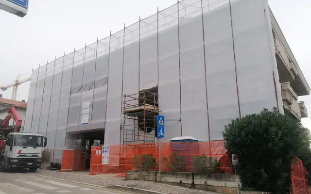
Facciata con teli di protezione
Vista del fabbricato rivestito da teli sul ponteggio, con ingresso al cantiere e delimitazioni visibili al piano strada.
Scheda cantiere
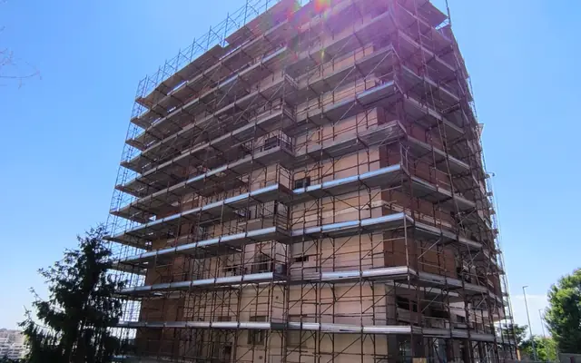
Ponteggio per un condominio
Ponteggio attorno a un edificio condominiale multipiano, fotografato dalla strada con la recinzione del cantiere in primo piano.
Scheda cantiere
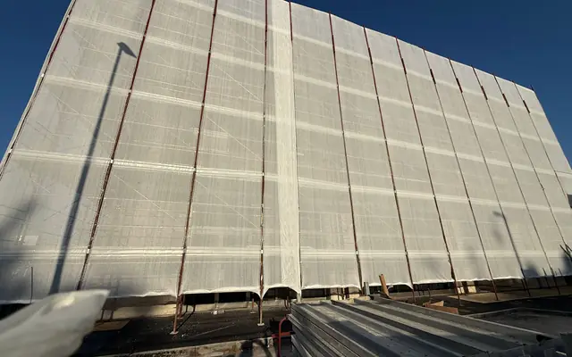
Schermatura della facciata
Ponteggio rivestito con teli lungo il fronte dell’edificio; la fotografia mostra la schermatura esterna e la base del cantiere.
Scheda cantiere
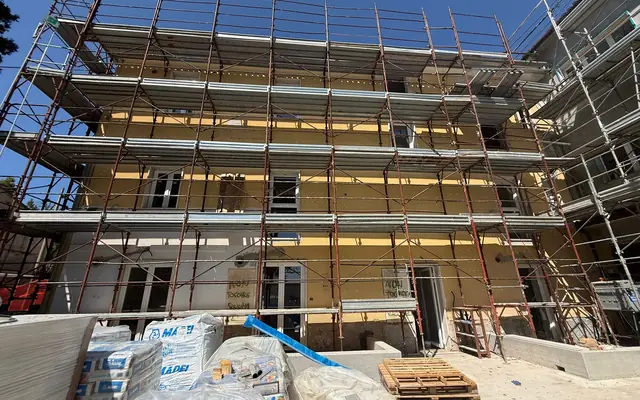
Ristrutturazione di un palazzo
Vista ravvicinata del ponteggio davanti a un palazzo in ristrutturazione, con materiali e area di lavoro in primo piano.
Scheda cantiere
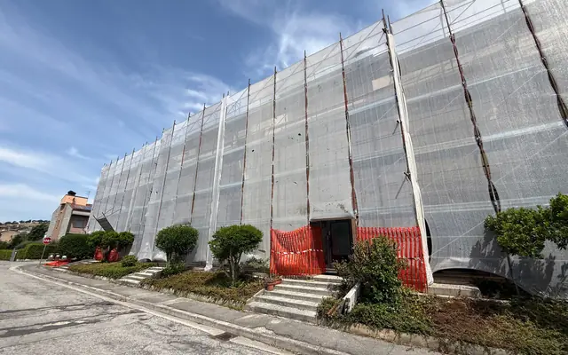
Ponteggio per una palazzina
Palazzina rivestita da ponteggio e teli esterni, fotografata dal piazzale antistante l’edificio.
Scheda cantiere
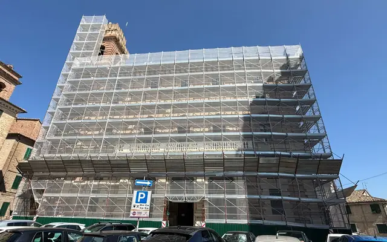
Ponteggio per un municipio
Ponteggio e teli protettivi sulla facciata di un municipio, con la torre e il parcheggio antistante visibili nella fotografia.
Scheda cantiere
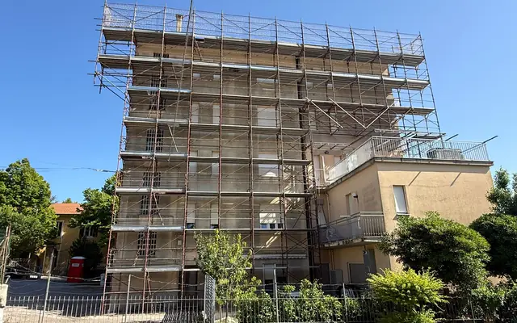
Ponteggio per una ristrutturazione
Ponteggio esteso sulla facciata e sul lato di un edificio in ristrutturazione, con piani di lavoro distribuiti in altezza.
Scheda cantiereDue interventi nel territorio marchigiano
Per una richiesta di noleggio, montaggio o smontaggio consulta i servizi per l’edilizia e le pagine dedicate a Osimo, Ancona e alle Marche.